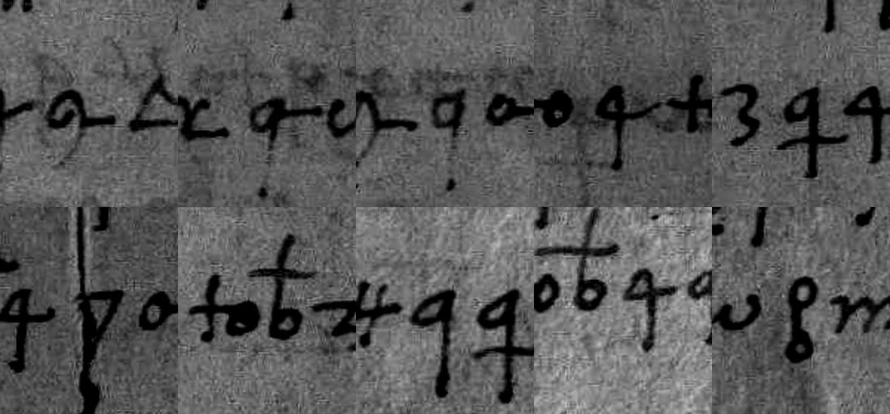

At a glanceKey from external plaintext · partial (90% of the cipher)
- The letter
- Maffeo da Treviglio, the Milanese agent in the Hungarian marriage talks, to Tamás Bakócz, bishop of Győr and chancellor of Hungary, Milan, 30 November 1490. Four pages in cipher; salutation, closing and address in clear.
- Where
- Hungarian National Archives (MNL OL), Diplomatikai Levéltár, DL 46150, online as Hungaricana charter 228061. The clear minute is in the Milan state archive, Carteggio Sforzesco 642, printed by Vestigia (document 194).
- The cipher
- A homophonic Latin cipher of about 60 letter signs: five for e, three for a, some signs with two or three values, signs for doubled letters, ten code signs for titles and common words, and nulls. No word division.
- How the key was found
- First from the ciphertext alone, to 79% of words. Then the clear minute of the same letter turned up in Milan, and the key was rebuilt by aligning the cipher with it. The minute is the key’s source, so it cannot also confirm it; the blind key and a statistical test do.
- What it says
- After King Matthias’s death the Duke of Milan takes up the marriage alliance with the new king, Vladislas II, through his sister Bianca Maria. No king ever received such a dowry, yet he goes from 150,000 to 200,000 ducats.
- Still open
- 63 words: one-off signs for titles (Bianca, the Chancellor of Bohemia), single slips of the writer, eight signs the scan leaves ambiguous, and twelve words lost to holes.
- Credit
- Contributed by Harrison Bornstein, whose Claude Code sessions transcribed the pages, broke the cipher and aligned it with the minute (pull request #199). The minute is Vestigia’s document 194.
01 The letter

DL 46150 is an original on paper, four pages closely written in signs, sealed. Only the salutation (“In christo pater et domine pater honorande”) and, at the foot of p. 4, the closing, the date and the address are in clear: “Mediolani in festo S. Andree apostoli … 1490 … Filius Mapheus Triuliensis”, to Thomas, bishop of Győr (Jauriensis), “Serenissimi Domini Regis Ungarie Cancellario”.
Maffeo da Treviglio had carried the Sforza–Corvinus marriage talks at Buda since 1489; his despatches from there to Ludovico Sforza are a separate cipher with its own page (Buda 1489–90, the key of DECODE R5411). King Matthias died in April 1490, and the match of Bianca Maria Sforza with his son John Corvinus lapsed. The new king, Vladislas II, took up the “affinity” for himself. Maffeo went back to Milan, reached the Duke on the 20th (the minute says the 24th) and on St Andrew’s day wrote this answer to the chancellor.
02 The cipher
3,199 signs of 76 shapes (14 lost to holes), about 60 of which carry letters. The labels in the transcription name shapes, not values. The key (key.md):
- Homophones. e has five signs (o, w, E, B, q), i four (2, 4, m, n before a non-u), s five, a three (to, F, L = the ⊥ shape), t four, u three.
- Signs with several values. qB = u, s or f; qA = s, i or t; ooA = u or s; s = h or f; gA = o or t. The minority values are few (qA gives i four times and t three times in 116), and each was checked on the image.
- Pair units and doubled letters. Ho = p, oH = q; X = ss, LL = ll, Ob = mm, sl = cc, wL = tt, Od = dd; & = et.
- Code signs. ff = Serenissimus Dominus Rex (in every case), ve = the Duke (Illustrissimus Princeps meus), Tx = Maiestas sua, Ga = affinitas, Gp = non, dt and dx = quod, K = quoniam, fo = 150,000, y = 200,000.
- Nulls. A, al, aN, Rx, e. Spelling of the writer: double consonants often single (afinitatem, suma, comunem), h dropped (retraere).
It is not Maffeo’s 1489 key R5411: there a = r, 1, f and the ⊥ shape is h. A second key headed “Cum Mafeo Triviliensi” is in the same Milan file (Sforzesco cart. 1597 no. 107, DECODE R5407), and the only value read from it so far, A = ⊥, agrees with this cipher (section 05).
03 The reading
The letter in summary, from the full Latin text and translation below:
- Maffeo has set out to the Duke what Bakócz did for the alliance, his own audience at Buda “medio [Illustrissime Domine Blance]” and the talks with the Chancellor of Bohemia. The Duke heard gladly that the king is well disposed, and now counts the bishop “inter precipuos et raros amicos”.
- The alliance is the continuation of the bond with King Matthias: the Duke will think he has “continued what was begun before, not entered into something new”.
- The dowry: “Durum enim ei visum est … quod ea summa a se expeti debeat quam neque ullus unquam Rex quamlibet magnus dotis nomine accepit” (it seemed hard to him that he should be asked for a sum no king, however great, ever received as dowry). Still, having come down to 150,000 ducats, he goes to 200,000, in jewels or money at the king’s choice; if money, 10,000 “in uestitu sponse necessarie exponenda”, and the king is to provide the jewels.
- Bakócz is to send the courier back at once: envoys with a proper mandate to Milan, or Milan’s envoys to Buda to conclude; otherwise he is to report the king’s will.
Measured by measure.py, which counts the words of the cipher letter and calls a word read when its signs give a Latin word that fits the sentence: 561 of 624 words (89.9%; 91.7% of the undamaged ones), of which 519 are the minute’s word exactly, 21 spelling variants, 14 the cipher’s own wording and 7 words the cipher adds. That is under the 95% bar, so the extent is partial.
| Page | Words | Read | % | Ambiguous sign | One-off or unvalued sign | No fitting word | Lost |
|---|---|---|---|---|---|---|---|
| 1 | 202 | 178 | 88.1 | 3 | 13 | 7 | 1 |
| 2 | 198 | 179 | 90.4 | 1 | 1 | 16 | 1 |
| 3 | 185 | 163 | 88.1 | 4 | 6 | 2 | 10 |
| 4 | 39 | 38 | 97.4 | 0 | 0 | 1 | 0 |
| All | 624 | 561 | 89.9 | 8 | 20 | 24 | 12 |
The cipher was made from the corrected minute: every insertion between the lines is enciphered, and so is the long marginal addition in its reading position, while none of the struck passages is. In places the cipher has its own wording, and it reads: “non” in “amabat non mediocriter” where the minute has a doubtful word, debeat for the minute’s doubtful deberet, and “neque [u]ideat a quibus haberi possit” (nor does he see from whom it could be had) for the minute’s “imo videat quod ambobus haberi possit”.
04 How the key was recovered
- Images. The Hungaricana viewer would not serve its tiles to an automated session; the contributor saved the three images (p. 1, the spread of pp. 2–3, p. 4) from their own browser. They are not in the repository.
- Transcription by Claude agents from enlarged crops, then splits made on shape alone (q into qA, qB and 4; g, oo, h, 8, 6) and two rounds of repairs where each change had to be visible on the image.
- Ciphertext-only break. Simulated annealing with a Latin model gave a first key; the crib reuerendissimam dominationem uestram fixed D = m; six rounds of reading, checking signs on the image and adjusting the key raised the words read from 23% to 79% (key14).
- External plaintext. A search of Vestigia by date then found document 194, the minute of the same letter in the Milan chancery. A dynamic-programming alignment of the four pages with it gave the key sign by sign, and listed 41 places where one sign disagreed while its neighbours agreed.
- Image checks. The 39 real suspects were checked on crops: 11 fixed, 19 confirmed as the writer wrote them, 9 left ambiguous.
- Retry pass (30 Oct 2026,
scripts/retry.py). The 80 words still unread were run again under an extended key (values seen in two or more other places, look-alike shapes, y as a code) and regraded. 17 came back: qA as i in circa, ipsam, animo, additione and t in affinitatem, inter, debeat (all seven confirmed as qA on the image); y = 200,000 at both places the sum stands; cotraxerat and prefatu with the nasal left out; the cipher’s own wording at three places. 544 words became 561.
05 The minute as evidence
The key was rebuilt from the minute; the measure calls a word exact when it is the minute’s word; the suspect signs were picked because they disagreed with it; the damaged words are filled from it. Agreement with the minute (95.2% of signs, 81.7% of its words) is therefore built in, and is not a check of the key. The independent evidence is this:
- The blind key. key14 was recovered from the ciphertext alone before the minute was found. Compared afterwards, it had 60 of 81 signs right, covering 96.2% of the signs in the text, and 396 of the 424 words its reading had read (93.4%) are the minute’s. It had taken the code signs for nulls, so their meanings rest on the minute alone.
- A statistical test (
docs/_validate.py, Latin letters model): the decryption scores −2.140 per letter; random keys of the same shape −5.566 (z 9.8); keys fitted to the shuffled ciphertext at best −3.214 (z 41). Verdict: pass. An annealer started from random keys on the ciphertext alone reaches −2.185, close to the reading, and the negative control does not pass. - Latin the minute does not have. Where the cipher’s wording differs from the minute or the minute is illegible, the key still gives fitting Latin (non, quoniam, debeat, neque uideat a quibus, habere uelit tantum, extendet, euenit), which a key fitted to the minute would not.
- The image went against the minute as often as with it: 19 of the 39 suspects were confirmed as the writer’s departures.
Key R5407. The second Milan key “Cum Mafeo Triviliensi” could not be opened from the session that reviewed this result (DECODE was out of its network reach). Its one value seen so far, A = ⊥, agrees: ⊥ is one of the three a-signs here, in all 38 cases, and h in R5411. An unrelated key would match that by chance about one time in twenty, so R5407 is a good candidate for the original key of DL 46150. If it is, its nomenclator should name the one-off title signs and give the code values a second source besides the minute.
06 What remains open
Grades follow the README: values from the minute are C (from a known-plaintext letter), not H; words inferred from the sentence are I. Not counted as read (63 words):
- 8 ambiguous signs (dominationem, cepit, semper, adduxit, secundum, reuerendissime, descendit, responso): checked on the only scan, on a crease, under a blot or between two look-alike shapes. The retry reads reuerendissime and responso if the sign is its sister shape (grade M). Blocker: illegible.
- 15 words on one-off title signs: “Illustrissime Domine Blance” (p. 1 l. 6), “Magnifico Domino Cancellario Boemie” (l. 10), “Serenissimi Domini Regis sui necnon” (l. 17), “summa ducentorum milium” (p. 3 l. 8). Each sign stands once; the meaning comes from the minute only. Blocker: open codes.
- 4 words on signs with no value there: excellentia (p. 1 l. 12), reiici (8C), admittendas (y where tt stands), esse (only a null stands for it). Blocker: single cases.
- 24 words that give no fitting Latin: the writer’s slips confirmed on the image (cicius, amictssimo, ragi, ostendare, promisirat …), letters left out (presenis, proter twice, ali, [u]ieat), multi-sign departures not yet checked on the image (mel and et for “mea ex”, reeatur, ubeiimum, frsotum, quemamthum, ssga, ainc), and one extra King sign. The intended words are clear from the sentence (grade I). Blocker: single cases.
- 12 words with a lost sign, most on p. 3 ll. 15–21, filled from the minute in ⟨ ⟩. Blocker: illegible (holes).
The dating line reads “ult(im)a [?] decembris [?]”, against the feast (30 November) and the minute’s “Ultimo Novembris”; it is left as written.
Full texts
The transcription and the decryption of every document on this page, so that the reading can be used and checked. Short files are shown here; all are in the repository.
DL 46150, Milan 30 Nov 1490, pp. 1-4 read in part
Maffeo da Treviglio reports to Bishop Tamás Bakócz that Duke Gian Galeazzo Sforza welcomes the marriage alliance ('affinity') with the new king of Hungary, Vladislas II, through his sister Bianca Maria; on the dowry he moves from 150,000 to 200,000 ducats, in jewels or money, 10,000 for the bride's trousseau, and asks for envoys with a mandate or the new king's answer by the courier.
Builds coherent sentences, but under the read bar of 95% of words read as sense (90% here); the holes are marked in the reading.
Transcription
L01: [In christo pater et dne pater honor] G p? mH 4 b 2 ooA qA n qB tp x to 5 M m O o ooA 4 D F x L02: d m E x 7 a w qA o P 2 ooB D w 3 qA 4 ooB H o N Q ooA m to 5 v e 7 E Y qB o P 2 a w 6 M m L03: mH L 7 Q to gB F U 7 N a Q ooA P 4 gB L Q E qB n d o hA 2 Q o Y w p H o gA qA M 2 U 7 E L04: a to D s L b gB F x H o w Y a B M E Y o 3 d 4 X 2 D F x 5 N x m P L gB 2 qB 3 w D M o L05: ooB Q a to x mH qA Y b L F hB m P 4 gB F qA w D n ooA L x b U 3 Q a to 8 m mH qB H o 2 5? L06: 4 P qA E Y ff w gB 7 a o qB F Q M D v e x B? d m N x e w 2 qB ooB qA N Y gA a 4 qA E Q o H qB L07: w D to 5 x U d ooA x M z gB 4 x N o jB H o F Y Q o 2 7 qA m M ooB qB gA mH L gB M ooB L08: qB M m tp qB 5 to x E Q F T o L 2 3 gB Y N d qB b gB qB ooB F 5 7 Y w s to Q M ff E Q d o x L09: ooA D 2 d n M gA 5 d m mH gB qB D o Q g? a L b gB to Q ooA x qB M m gB D E mH qB x H o L10: w Y qA H o qA L D qA 2 x M hA mH ooA D s a o H qB 2 tp M ooB ff Y w x m H o qA F D gB a L11: to b Q L 3 5 F D mH gA Ob m ooB E Y to Q o p mH w H o 4 gB D E z o Q N to P qA x U? o L12: 2 ooA qA w 8 b a 6 E 3 gB d L to M 5 m 2 Q n ooA w hA 4 T o P gB m X 4 x E ff tp w L13: 3 E d 4 ooA H o U qA 2 Q M x o X w L d mH gA P gB Y F s o 3 5 to D ooB E mH M D L14: L hB 4 3 2 gB F Q w x b ooA m qB ooB mH M x w p ooA E a T 2 qA D w m ooB Y E qB o a L15: o P d 4 X m x L D n M N o H qB o 5 U D 4 P F gB m gA 3 E x qB w qA gB a to D ooB Q L16: M 5 2 U qA 4 X m x L D b N O 3 gA ooA E a m gB n qB L x o H M to D F d o L x L17: 7 Y w mH 4 H o qB o 2 P b z m 3 to Y? o 5 w tp E to Q o gB a E 3 4 ooB w Q a o O L18: P 2 T E 3 o s n mH 4 N gB to x ?? P 3 2 8 m hA 5 ooA tp 4 Q L 3 qB o H M 2 3 L19: j B a ooA w P gB m N a o Q 2 F D to d o L x Y E B? to Q ooA a o gA to x 2 b Q X m L20: D U F hB o mH gB qB o H M E x qA w D f o a E Y 3G to 2 H o ooB F x s L tp qB m X E L21: U 4 gB o 3 5 4 Q to T w gA Q o D 7 N Y w o H ooA U b qB x qA w a E 3 2 X m D U L22: n ooA N P 5 to D Y E 3G w x L Q 8 m F qB w z 4 mH 2 qA D o x N Y 4 w d o L23: F hB 2 P m gB L Q o to 3 m mH B H gB qB D o qA gB M ooB o H ooA w 2 3 7 a o qA L24: w P gB E x d n o D ooB 4 to 3 Q o L 2 7 qA to D Y w ooA o a B? P 5 4 X 2 x L D 5 gA L25: x 4 3 to gB 2 N P w x qB o qA Q Y F D to x F tp L gB G p? D o 5 2 N mH? a 4 Q w Y L26: 3 qB P b 2 P gB w a H o Y o mH 4 7 ooA N ooB o Q Y to a N qA to D 2 b gA ooB Y B mH w L27: 7 4 gB w Q o H qB to 3 Q N o hB 2 mH to? b 4 qB ooB 2 7 qA 4 M ooB o Y O F B 2 qB qA o p L28: mH o 6 gA o? H 3 Q 2 to x F hB o mH gB qB ooB tp N P 2 qA U H o o Y 4 T M ooB b gA x 7 Y N L29: tp to Q ooA qA B ooB gB Q to 3 gB Q N H o hA qB ooB 2 P mH Y o x B 3 Q 4 o 2 ooA qA w a 3G to
Transcription
L01: 2 7 qA to x F D gA Y qA qB ooB mH o H o 2 Q b qB 4 ooA qA 7 a gA mH qB hA 5 ooA tp 4 N L02: qB tp o m 2 x ooA D qB Y ooB N? Q M D qA o 3 Q 4 w gB o H qB to 3 5 gA mH ooA x n qB o L03: Q o x H o qB qA 7 to gB 2 o gB ooA a G a ff qB o qA gB a 2 D 4 Y ooA x 2 P D N L04: 5 qB x v e D o gA O Y to Q L w qB gB K 7 a o Q w Y n qB F x dt o 4 qB qA w 8B mH o 6A gA L05: o P Q 2 to qA ooA O N ooB w x H o o a F x N a B? o gB tp w 3 2 qB N hA o P L06: gB 2 to Tx H o a gA qA o b qB Q to ooB 2 gA o Q 4 to x L 3 Q o n qB to x L 5 2 6A gA ooA 5 L07: a o 3 P qB x to qA mH w P 5 o Y B? gB w Q 7 a gA Q o Y a w O 2 to D 5 2 3 P 4 Q to L08: gB o x B? Q H o a N gB o Y qA 4 3 O? qB hA to Y w x w 4 qB qA to P 2 D 4 tp gA 3 4 Q F L09: gB o x mH ooA x o 2 ooA qA 4 P Q q? 3 gB 2 N j ooA o a 2 Q 7 w Y G a n qB to x L10: mH qB x Y o O w D to Q 8A 2 L b N gB a to p? o Y F Q mH ooA x a o 3 P N qB w qA L11: Q a N mH gA 3 2 qB P O? 2 to 5 dt 4 H o qA o 5 gA x 4 P ooA qA a o Bd to M gA tp 4 qA L12: o qB w mH gB qB ooB j? M 4 gB ooB 2 T 4 7 o a qA ooA to 5 w tp 4 Q o H qB to P 5 N s o mH L13: G a 7 a N mH o 5 to gB 2 P w F o H ooA w H o a 2 qB qA mH o 7 gA L j? qB o a to Q L14: mH gA 3 Q 2 P ooA F X? o G p? 3 N qB to x 4 P 8C X? o qB w a ooA x o qB gB dt? al L15: qA qB O to 5 gA Q 4 ooB H o o Y Tx 7 w gB 4 Q o n qB w x to? x g f? ooA x qB 2 qB to L16: o qA gB D N 5 qB x w p mH o 5 B? Y w 2 Q to v e D w qB x 4 P to hA 2 N ?? x L17: ooB qB qA 7 o 3 ooB 2 gA P o D to Od qB P? 4 gB 5 qB a ooA x o P 2 D w 4 qB 2 qA qB x L18: o qB Q M Q w O N o H qB N n ooA w a o qB w Y B P 5 2 X? 4 x o 5 N x 2 L19: P to Q 4 N P 2 ooA w qA gB Y B mH N D o x gA a to M 4 dt o to qA qB O F? L20: to qA o w 8B 7 B Q 2 5 o tp w to qA o H qB to x P o n ooA w qB 6A gA ooA qA Rx b L21: qB P n ooA to x Y o jB o H qB F D hA 2 tp o Q D F O 3 M ooB 5 N Q 2 qA P N x 4 P o L22: to sl w 7 2 gB P o o H qB w ooA 2 o to gB F o H qB 4 tp ooA qA f to tp o Y 4 L23: H o N X? 4 Q al qA o 5 n qB to 3 5 N Tx F 5 s to P mH G a 2 3 mH hA 4 P o Q L24: o H qB o x F 5 D N 5 qB D w gB 2 7 qA L ?? gB w Q ooA N qA to hA 8C D 2 6B 8A 4 L25: to hB 2 a x F qA Q 2 ooB B jB mH o 6A gA w P Q 2 to v e D o 4 mH N P Q o 3 L26: gB to o Y 2 Q mH qB x to hA 2 n qB F to Od 4 Q qA N P o 5 N Q 2 ooA qA qB L27: 7 a to 2 6A gA qB 5 dt n qB N 3 5 to x a F O 4 D L Q 8A 2 o 7 a N D 2 qB 4 Y to Q L28: N qA Q o P 5 F a w oo o w Q 5 4 O? P 2 Q to gB m ooB 5 N x qB qA o Q P N L29: tp 2 hA 4 gB to Q 4 ooB qA F 3 O qB 2 3 4 ooB o 2 qB qA tp N P F x f to tp o a o
Transcription
L01: qB o 6 gA w a to Q 2 N 3 o x B Q ooB 2 mH qB Q 4 7 a 2 ooA qB 5 o ooA mH w 3 5 o L02: Y to gB to 5 fo 5 qB mH F gB N a qB x P qB 3 mH & ooA qA n qB w F 5 y qA o w 8B L03: Q o 3 5 w gB qA 2 qB o 2 3 w to qB qA O to 7 L a Q o D 2 N mH to hA 4 qB x L04: Y o mH 2 7 w a E qB o hA 2 gB qA 2 qB o 7 w b qB 3 2 to x s F tp o a w qB o hA 2 Q L05: Q to 3 gB qB x mH qB 7 2 to Q dx to a tp 2 gB Y 4 N x to 2 o qA Q to gB 4 qA a o L06: O 2 o Y o hA 2 3 n qB o Q ooA Y A o N w jB mH o 7 Q N dx qA 2 7 o b qB 3 2 L07: to x Q to P gB qB D ooA N hA qB o a 2 gB qA mH 2 to gB w p 5 2 mH Q to A L08: qB s? tp? 5 o mH w x D 2 hA 4 to 2 3 qB o qB Q 4 gB ooA qA 7 N 3 ooB o P w b o X to L09: a 2 N o X w o p 7 N 3 w P 5 tp? A 5 o 2 N b to hA 4? tp qB qA M o Y N L10: H o a o j? to Q F Y w O 2 to x L 2 o qA Q F ooB s N 3 gA a 2 qB 4? mH w qA o b gA L11: P 5 qB x A qB Q a 2 ooA ooA n qB o 7 to a gB 2 qB 5 4 3 P 2 Q to gB o x 7 a N L12: qB 2 5 o Y w Q o 3 B to Q ooA Y & o H qB o qA ooA O to y qB Q x to O? P F L13: o qA gB 4 Q to o H qB 2 qB n ooA o d? 5 2 O? P 4 X 2 x qB qA w Q o D m P o P L14: Q 2 X 4 D ooA qA Y o p H o N Q o qA gB w gB 5 o tp w gB B to D qA 2 tp 4 L15: mH N P 5 o ?? w E? Q? o x o p 2 ?? gB 4 D L Y E A? f o mH w qB gB ooA qB O ?? L16: ?? 2 qB qA dx 2 P f to b Y o F tp v e x o N Y o Q a F o Y w H o N Q qB 2 L17: o H qB 4 o a gB qB ?? a M D j? to Q ?? L Y A Y o qB w a B P 5 2 X qB x o f L18: 5 N x 2 P to Q 4 gA 3 4 qB o qA ?? Y w 2 Q to hA 4 tp o a F z 4 Q o Y y? L19: 7 Y N mH w 5 2 gB o Q 5 w qB b o g? 5 2 Q to 5 A gB to x s N P o qA Q to ooB L20: b N P 5 2 mH 4 gA 3 w qA qB Q P o n? qB w to tp ff qB o qA Q a N P o n qB w L21: to qB N tp 2 ?? x w Y 4 gB gA a o 8C b 2 7 N ?? 2 3 Q o Q w N x 4 P qB ooB L22: K D Q? hA Q N H o z qB ooB 2 P tp N P 4 gB to Q o w 2 qB ooB o p b w 6 gA o P L23: Q 2 o o H qB to x 2 3 ooB qB O to 5 N gB 4 qA a o 7 N 3 w Y o? H o N Q o qA L24: Q 4 qA A? K 2 7 ooB to n qB o x s? to 5 D N 5 qB x qB L 3 3 2 P o x 2 Q to w gB L25: j? N Y Q qB 3 to D mH qB x to hB 2 3 4 tp ooA qA mH N x qB P o D s? to T o a w L26: qA N hA o Q o H qB to qA mH N P 5 2 Q 4 gA P o ooB qA 4 Tx o Q qB N ooB M gB L27: qA 7 o Y N to 5 x 2 y o P 5 to qA 5 qB p w Y 2 gB 4 qA 5 gA x 2 3 to Q 2 N ?? L28: qB o qA Q Y to a o qB w Y B P 5 2 X 4 x to ooB qB tp 4 Q N Y o x 4 Q o gB ?? L29: s qB P b Q to tp o 6 gA F Y 4 qB D mH qB x a o qA 7 N P ooA gB o Q to qB Q f A?
Transcription
L01: N 7 o Y to tp? 2 Q qB Y dt 2 qA F 2 P b N Y to Q gA a o ooB? b qB D N 7 H o gA L02: Y Q qB 3 N D to P 5 F Q N qA 2 3 o x N a to D 2 wL to P Q qB a aN to qB Q L03: 7 a N qB 2 5 o tp? 4 Q dt s 2 P b 3 N ooB Q a 2 to 5 qB N qA ooA o 3 2 a o L04: H o N X? 4 3 Q to 5 mH gA 3 b hA qB 5 o 3 5 qB D aN qA 2 3 to hA 2 Q o a s & L05: o qB w 3 2 E? Q N D P 2 3 gA 5 o tp? w T 2 Q 7 o a 2 7 qA qB D Rx y s p? L06: Q to tp? o 6 gA to a 2 qB D x 2 b 8 4 qA 2 O P 4 j m b to a o ff qB o qA L07: Q a 2 qB N hA qB P Q to gB w D o Q 5 w hA 2 tp? E? a to Q 2 gA 3 o D
Decryption
# DL 46150, page 1: line-by-line decryption
Decryption of DL 46150 under key.json, line by line against transcription/p1.txt. signs = the transcription; decrypt = what each unit gives (· null, {...} code sign, _ lost sign, # no value; a polyphonic sign shows the value of its set that fits); Latin = the words whose first sign stands on the line. [?word] = rests on a suspect or unvalued sign (the word the context and the minute call for); [...] = not read; ⟨word⟩ = lost to damage, filled from the clear minute (ASMi Sforzesco 642).
## P1L01
```
signs: [In christo pater et dne pater honor] G p? mH 4 b 2 ooA qA n qB tp x to 5 M m O o ooA 4 D F x
decrypt: {non} c i c i u s q u a m a d u i g e s i m a m
```
Latin: Non [?citius] quam ad uigesimam
## P1L02
```
signs: d m E x 7 a w qA o P 2 ooB D w 3 qA 4 ooB H o N Q ooA m to 5 v e 7 E Y qB o P 2 a w 6 M m
decrypt: d i e m p r e s e n i s m e n s i s p o t u i a d {illustrissimumprincipemmeum} p e r u e n i r e c u i
```
Latin: diem [?presentis] mensis potui ad Illustrissimum Principem meum peruenire. Cui
## P1L03
```
signs: mH L 7 Q to gB F U 7 N a Q ooA P 4 gB L Q E qB n d o hA 2 Q o Y w p H o gA qA M 2 U 7 E
decrypt: c a p t a t a o p o r t u n i t a t e f i d e l i t e r e x p o s u i o p e
```
Latin: captata oportunitate fideliter exposui operam
## P1L04
```
signs: a to D s L b gB F x H o w Y a B M E Y o 3 d 4 X 2 D F x 5 N x m P L gB 2 qB 3 w D M o
decrypt: r a m f a c t a m p e r r e u e r e n d i ss i m a m d o m i n a t i u n e m u e
```
Latin: factam per Reuerendissimam [?Dominationem] Vestram
## P1L05
```
signs: ooB Q a to x mH qA Y b L F hB m P 4 gB F qA w D n ooA L x b U 3 Q a to 8 m mH qB H o 2 5?
decrypt: s t r a m c i r c a a f i n i t a t e m q u a m c o n t r a h i c u p i d
```
Latin: circa afinitatem quam contrahi [?cepit]
## P1L06
```
signs: 4 P qA E Y ff w gB 7 a o qB F Q M D v e x B? d m N x e w 2 qB ooB qA N Y gA a 4 qA E Q o H qB
decrypt: i n t e r {serenissimumdominumregemhungarie} e t p r e f a t u m {illustrissimumdominummeum} m e d i o m · e i u s s o r o r i s e t q u
```
Latin: inter Serenissimum Dominum Regem Hungarie et prefatum Illustrissimum Dominum meum, medio [...] [...] [...] eius sororis, et quemadmodum
## P1L07
```
signs: w D to 5 x U d ooA x M z gB 4 x N o jB H o F Y Q o 2 7 qA m M ooB qB gA mH L gB M ooB
decrypt: e m a d m o d u m u l t i m o e x p a r t e i p s i u s u o c a t u s
```
Latin: ultimo ex parte ipsius uocatus
## P1L08
```
signs: qB M m tp qB 5 to x E Q F T o L 2 3 gB Y N d qB b gB qB ooB F 5 7 Y w s to Q M ff E Q d o x
decrypt: f u i b u d a m e t a b e a i n t r o d u c t u s a d p r e f a t u {serenissimumdominumregem} e t d e m
```
Latin: fui Budam et ab ea introductus ad prefatu Serenissimum Dominum Regem, et demum
## P1L09
```
signs: ooA D 2 d n M gA 5 d m mH gB qB D o Q g? a L b gB to Q ooA x qB M m gB D E mH qB x H o
decrypt: u m i d q u o d d i c t u m e t t r a c t a t u m f u i t m e c u m p
```
Latin: id quod dictum et tractatum fuit mecum per
## P1L10
```
signs: w Y qA H o qA L D qA 2 x M hA mH ooA D s a o H qB 2 tp M ooB ff Y w x m H o qA F D gB a
decrypt: e r i p s a m s i m u l c u m h r q u i b u s {serenissimusdominusrex} r e m i p s a m t r
```
Latin: ipsam simul cum [...] [...] [...] [...], quibus Serenissimus Dominus Rex rem ipsam tractandam
## P1L11
```
signs: to b Q L 3 5 F D mH gA Ob m ooB E Y to Q o p mH w H o 4 gB D E z o Q N to P qA x U? o
decrypt: a c t a n d a m c o mm i s e r a t e x c e p i t m e l e t o a n i m o e
```
Latin: commiserat. Excepit [?mea] [?ex] animo eius
## P1L12
```
signs: 2 ooA qA w 8 b a 6 E 3 gB d L to M 5 m 2 Q n ooA w hA 4 T o P gB m X 4 x E ff tp w
decrypt: i u s e h c r c e n t d a a u d i i t q u e l i b e n t i ss i m e {serenissimumdominumregem} b e
```
Latin: [?Excellentia] audiitque libentissime Serenissimum Dominum Regem bene
## P1L13
```
signs: 3 E d 4 ooA H o U qA 2 Q M x o X w L d mH gA P gB Y F s o 3 5 to D ooB E mH M D
decrypt: n e d i s p o s i t u m e ss e a d c o n t r a h e n d a m s e c u m
```
Latin: dispositum esse ad contrahendam secum
## P1L14
```
signs: L hB 4 3 2 gB F Q w x b ooA m qB ooB mH M x w p ooA E a T 2 qA D w m ooB Y E qB o a
decrypt: a f i n i t a t e m c u i u s c u m e x u e r b i s m e i s r e u e r
```
Latin: afinitatem. Cuius cum ex uerbis meis Reuerendissimam
## P1L15
```
signs: o P d 4 X m x L D n M N o H qB o 5 U D 4 P F gB m gA 3 E x qB w qA gB a to D ooB Q
decrypt: e n d i ss i m a m q u o q u e d o m i n a t i o n e m u e s t r a m s t
```
Latin: quoque Dominationem Vestram studiosissimam
## P1L16
```
signs: M 5 2 U qA 4 X m x L D b N O 3 gA ooA E a m gB n qB L x o H M to D F d o L x
decrypt: u d i o s i ss i m a m c o g n o u e r i t q u a m q u a m a d e a m
```
Latin: cognouerit, quamquam ad eam
## P1L17
```
signs: 7 Y w mH 4 H o qB o 2 P b z m 3 to Y? o 5 w tp E to Q o gB a E 3 4 ooB w Q a o O
decrypt: p r e c i p u e i n c l i n a r e d e b e a t e t r e n i s e t r e g
```
Latin: precipue inclinare debeat [?Serenissimi] [...] [...] [...] [...] Regni
## P1L18
```
signs: P 2 T E 3 o s n mH 4 N gB to x ?? P 3 2 8 m hA 5 ooA tp 4 Q L 3 qB o H M 2 3
decrypt: n i b e n e f i c i o t a m _ n n i h i l d u b i t a n s q u i n
```
Latin: beneficio, ⟨tamen⟩ nihil dubitans quin
## P1L19
```
signs: j B a ooA w P gB m N a o Q 2 F D to d o L x Y E B? to Q ooA a o gA to x 2 b Q X m
decrypt: f e r u e n t i o r e t i a m a d e a m r e e a t u r e o a m i c t ss i
```
Latin: feruentior etiam ad eam [?reddatur], eo [?amicissimo]
## P1L20
```
signs: D U F hB o mH gB qB o H M E x qA w D f o a E Y 3G to 2 H o ooB F x s L tp qB m X E
decrypt: m o a f e c t u q u e m s e m h e r e r g a i p s a m h a b u i ss e
```
Latin: afectu quem [?semper] erga ipsam habuisse
## P1L21
```
signs: U 4 gB o 3 5 4 Q to T w gA Q o D 7 N Y w o H ooA U b qB x qA w a E 3 2 X m D U
decrypt: o i t e n d i t a b e o t e m p o r e q u o c u m s e r e n i ss i m o
```
Latin: [?ostendit] ab eo tempore quo cum Serenissimo
## P1L22
```
signs: n ooA N P 5 to D Y E 3G w x L Q 8 m F qB w z 4 mH 2 qA D o x N Y 4 w d o
decrypt: q u o n d a m r e g e m a t h i a f e l i c i s m e m o r i e d e
```
Latin: quondam Rege Mathia felicis memorie de
## P1L23
```
signs: F hB 2 P m gB L Q o to 3 m mH B H gB qB D o qA gB M ooB o H ooA w 2 3 7 a o qA
decrypt: a f i n i t a t e a g i c e p t u m e s t u s q u e i n p r e s
```
Latin: afinitate agi ceptum est usque in presentem
## P1L24
```
signs: w P gB E x d n o D ooB 4 to 3 Q o L 2 7 qA to D Y w ooA o a B? P 5 4 X 2 x L D 5 gA
decrypt: e n t e m d i e m s i a n t e a i p s a m r e u e r e n d i ss i m a m d o
```
Latin: diem: si antea ipsam Reuerendissimam Dominationem
## P1L25
```
signs: x 4 3 to gB 2 N P w x qB o qA Q Y F D to x F tp L gB G p? D o 5 2 N mH? a 4 Q w Y
decrypt: m i n a t i o n e m u e s t r a m a m a b a t {non} m e d i o c r i t e r
```
Latin: Vestram amabat non mediocriter,
## P1L26
```
signs: 3 qB P b 2 P gB w a H o Y o mH 4 7 ooA N ooB o Q Y to a N qA to D 2 b gA ooB Y B mH w
decrypt: n u n c i n t e r p r e c i p u o s e t r a r o s a m i c o s r e c e
```
Latin: nunc inter precipuos et raros amicos recepit;
## P1L27
```
signs: 7 4 gB w Q o H qB to 3 Q N o hB 2 mH to? b 4 qB ooB 2 7 qA 4 M ooB o Y O F B 2 qB qA o p
decrypt: p i t e t q u a n t o e f i c a c i u s i p s i u s e r g a e i u s e x
```
Latin: et quanto eficacius ipsius erga eius Excellentiam
## P1L28
```
signs: mH o 6 gA o? H 3 Q 2 to x F hB o mH gB qB ooB tp N P 2 qA U H o o Y 4 T M ooB b gA x 7 Y N
decrypt: c e ll e p n t i a m a f e c t u s b o n i s o p e r i b u s c o m p r o
```
Latin: afectus bonis operibus comprobatus
## P1L29
```
signs: tp to Q ooA qA B ooB gB Q to 3 gB Q N H o hA qB ooB 2 P mH Y o x B 3 Q 4 o 2 ooA qA w a 3G to
decrypt: b a t u s e s t t a n t t o p l u s i n c r e m e n t i e i u s e r g a
```
Latin: est, tanto plus incrementi eius ergaDecryption
# DL 46150, page 2: line-by-line decryption
Decryption of DL 46150 under key.json, line by line against transcription/p2.txt. signs = the transcription; decrypt = what each unit gives (· null, {...} code sign, _ lost sign, # no value; a polyphonic sign shows the value of its set that fits); Latin = the words whose first sign stands on the line. [?word] = rests on a suspect or unvalued sign (the word the context and the minute call for); [...] = not read; ⟨word⟩ = lost to damage, filled from the clear minute (ASMi Sforzesco 642).
## P2L01
```
signs: 2 7 qA to x F D gA Y qA qB ooB mH o H o 2 Q b qB 4 ooA qA 7 a gA mH qB hA 5 ooA tp 4 N
decrypt: i p s a m a m o r s u s c e p i t c u i u s p r o c u l d u b i o
```
Latin: ipsam amor suscepit, cuius procul dubio
## P2L02
```
signs: qB tp o m 2 x ooA D qB Y ooB N? Q M D qA o 3 Q 4 w gB o H qB to 3 5 gA mH ooA x n qB o
decrypt: u b e i i m u m f r s o t u m s e n t i e t q u a n d o c u m q u e
```
Latin: [?uberrimum] [?fructum] sentiet quandocumque
## P2L03
```
signs: Q o x H o qB qA 7 to gB 2 o gB ooA a G a ff qB o qA gB a 2 D 4 Y ooA x 2 P D N
decrypt: t e m p u s p a t i e t u r {affinitasserenissimidominiregis} {serenissimumdominumregemhungarie} u e s t r i m i r u m i n m o
```
Latin: tempus patietur. Affinitas Serenissimi Domini Regis [...] uestri mirum in modum
## P2L04
```
signs: 5 qB x v e D o gA O Y to Q L w qB gB K 7 a o Q w Y n qB F x dt o 4 qB qA w 8B mH o 6A gA
decrypt: d u m {illustrissimoprincipi} m e o g r a t a e s t {quoniam} p r e t e r q u a m {quodab} e i u s e x c e ll
```
Latin: Illustrissimo Principi meo grata est, quoniam, preterquam quod ab eius Excellentia
## P2L05
```
signs: o P Q 2 to qA ooA O N ooB w x H o o a F x N a B? o gB tp w 3 2 qB N hA o P
decrypt: e n t i a s u m o s e m p e r a m o r e e t b e n i u o l e n
```
Latin: sumo semper amore et beniuolentia
## P2L06
```
signs: gB 2 to Tx H o a gA qA o b qB Q to ooB 2 gA o Q 4 to x L 3 Q o n qB to x L 5 2 6A gA ooA 5
decrypt: t i a {maiestatemsuam} p r o s e c u t a s i t e t i a m a n t e q u a m a d i ll u d
```
Latin: Maiestatem suam prosecuta sit etiam antequam ad illud
## P2L07
```
signs: a o 3 P qB x to qA mH w P 5 o Y B? gB w Q 7 a gA Q o Y a w O 2 to D 5 2 3 P 4 Q to
decrypt: r e g n u m a s c e n d e r e t e t p r o t e r r e g i a m d i g n i t a
```
Latin: Regnum ascenderet, et [?propter] regiam dignitatem
## P2L08
```
signs: gB o x B? Q H o a N gB o Y qA 4 3 O? qB hA to Y w x w 4 qB qA to P 2 D 4 tp gA 3 4 Q F
decrypt: t e m e t p r o t e r s i n g u l a r e m e i u s a n i m i b o n i t a
```
Latin: et [?propter] singularem eius animi bonitatem,
## P2L09
```
signs: gB o x mH ooA x o 2 ooA qA 4 P Q q? 3 gB 2 N j ooA o a 2 Q 7 w Y G a n qB to x
decrypt: t e m c u m e i u s i n t e n t i o f u e r i t p e r {affinitatem} q u a m
```
Latin: cum eius intentio fuerit per affinitatem quam
## P2L10
```
signs: mH qB x Y o O w D to Q 8A 2 L b N gB a to p? o Y F Q mH ooA x a o 3 P N qB w qA
decrypt: c u m r e g e m a t h i a c o t r a x e r a t c u m r e g n o u e s
```
Latin: cum Rege Mathia cotraxerat cum Regno uestro
## P2L11
```
signs: Q a N mH gA 3 2 qB P O? 2 to 5 dt 4 H o qA o 5 gA x 4 P ooA qA a o Bd to M gA tp 4 qA
decrypt: t r o c o n i u n g i a d {quod} i p s e d o m i n u s r e x a u o b i s
```
Latin: coniungi, [...] quod ipse Dominus Rex a uobis
## P2L12
```
signs: o qB w mH gB qB ooB j? M 4 gB ooB 2 T 4 7 o a qA ooA to 5 w tp 4 Q o H qB to P 5 N s o mH
decrypt: e u e c t u s f u i t s i b i p e r s u a d e b i t q u a n d o h e c
```
Latin: euectus fuit, sibi persuadebit, quando hec
## P2L13
```
signs: G a 7 a N mH o 5 to gB 2 P w F o H ooA w H o a 2 qB qA mH o 7 gA L j? qB o a to Q
decrypt: {affinitas} p r o c e d a t i n e a q u e p r i u s c e p t a f u e r a t
```
Latin: affinitas procedat, in ea que prius cepta fuerat
## P2L14
```
signs: mH gA 3 Q 2 P ooA F X? o G p? 3 N qB to x 4 P 8C X? o qB w a ooA x o qB gB dt? al
decrypt: c o n t i n u a ss e {non} n o u a m i n i ss e u e r u m e s t {quod} ·
```
Latin: continuasse, non noua [?iniuisse]. Verum est quod
## P2L15
```
signs: qA qB O to 5 gA Q 4 ooB H o o Y Tx 7 w gB 4 Q o n qB w x to? x g f? ooA x qB 2 qB to
decrypt: s u m a d o t i s p e r {maiestatemsuam} p e t i t e q u e m a m t h u m u i s a
```
Latin: suma dotis per Maiestatem suam [?petita], [?quemadmodum] uisa
## P2L16
```
signs: o qA gB D N 5 qB x w p mH o 5 B? Y w 2 Q to v e D w qB x 4 P to hA 2 N ?? x
decrypt: e s t m o d u m e x c e d e r e i t a {illustrissimumprincipem} m e u m i n a l i o _ m
```
Latin: est modum excedere, ita Illustrissimum Principem meum in ⟨aliquam⟩
## P2L17
```
signs: ooB qB qA 7 o 3 ooB 2 gA P o D to Od qB P? 4 gB 5 qB a ooA x o P 2 D w 4 qB 2 qA qB x
decrypt: s u s p e n s i o n e m a dd u n i t d u r u m e n i m e i u i s u m
```
Latin: suspensionem [?adduxit]. Durum enim ei uisum
## P2L18
```
signs: o qB Q M Q w O N o H qB N n ooA w a o qB w Y B P 5 2 X? 4 x o 5 N x 2
decrypt: e s t u t e g o q u o q u e r e u e r e n d i ss i m e d o m i
```
Latin: est, ut ego quoque Reuerendissime Dominationi
## P2L19
```
signs: P to Q 4 N P 2 ooA w qA gB Y B mH N D o x gA a to M 4 dt o to qA qB O F?
decrypt: n a t i o n i u e s t r e c o m e m o r a u i {quod} e a s u m a
```
Latin: Vestre comemoraui, quod ea suma
## P2L20
```
signs: to qA o w 8B 7 B Q 2 5 o tp w to qA o H qB to x P o n ooA w qB 6A gA ooA qA Rx b
decrypt: a s e e x p e t i d e b e a t q u a m n e q u e u ll u s · c
```
Latin: a se expeti debeat quam neque ullus
## P2L21
```
signs: qB P n ooA to x Y o jB o H qB F D hA 2 tp o Q D F O 3 M ooB 5 N Q 2 qA P N x 4 P o
decrypt: u n q u a m r e x q u a m l i b e t m a g n u s d o t i s n o m i n e
```
Latin: unquam Rex quamlibet magnus dotis nomine
## P2L22
```
signs: to sl w 7 2 gB P o o H qB w ooA 2 o to gB F o H qB 4 tp ooA qA f to tp o Y 4
decrypt: a cc e p i t n e q u e u i e a t a q u i b u s h a b e r i
```
Latin: accepit, neque [?uideat] a quibus haberi
## P2L23
```
signs: H o N X? 4 Q al qA o 5 n qB to 3 5 N Tx F 5 s to P mH G a 2 3 mH hA 4 P o Q
decrypt: p o ss i t · s e d q u a n d o {prefatamaiestasregia} a d h a n c {affinitatem} i n c l i n e t
```
Latin: possit. Sed quando prefata Maiestas regia ad hanc affinitatem inclinet,
## P2L24
```
signs: o H qB o x F 5 D N 5 qB D w gB 2 7 qA L ?? gB w Q ooA N qA to hA 8C D 2 6B 8A 4
decrypt: q u e m a d m o d u m e t i p s a _ t e t u o s a l i m i c h i
```
Latin: quemadmodum et ipsa et uos [?alias] michi
## P2L25
```
signs: to hB 2 a x F qA Q 2 ooB B jB mH o 6A gA w P Q 2 to v e D o 4 mH N P Q o 3
decrypt: a f i r m a s t i s e x c e ll e n t i a {principis} m e i c o n t e n
```
Latin: afirmastis, Excellentia Principis mei contenta
## P2L26
```
signs: gB to o Y 2 Q mH qB x to hA 2 n qB F to Od 4 Q qA N P o 5 N Q 2 ooA qA qB
decrypt: t a e r i t c u m a l i q u a a dd i t i o n e d o t i s s u
```
Latin: erit cum aliqua additione dotis supra
## P2L27
```
signs: 7 a to 2 6A gA qB 5 dt n qB N 3 5 to x a F O 4 D L Q 8A 2 o 7 a N D 2 qB 4 Y to Q
decrypt: p r a i ll u d {quod} q u o n d a m r a g i m a t h i e p r o m i s i r a t
```
Latin: illud quod quondam [?Regi] Mathie [?promiserat]
## P2L28
```
signs: N qA Q o P 5 F a w oo o w Q 5 4 O? P 2 Q to gB m ooB 5 N x qB qA o Q P N
decrypt: o s t e n d a r e s e e t d i g n i t a t i s d o m u s e t n o
```
Latin: [?ostendere] se et dignitatis domus et nobilitatis
## P2L29
```
signs: tp 2 hA 4 gB to Q 4 ooB qA F 3 O qB 2 3 4 ooB o 2 qB qA tp N P F x f to tp o a o
decrypt: b i l i t a t i s s a n g u i n i s e i u s b o n a m h a b e r e
```
Latin: sanguinis eius bonam habereDecryption
# DL 46150, page 3: line-by-line decryption
Decryption of DL 46150 under key.json, line by line against transcription/p3.txt. signs = the transcription; decrypt = what each unit gives (· null, {...} code sign, _ lost sign, # no value; a polyphonic sign shows the value of its set that fits); Latin = the words whose first sign stands on the line. [?word] = rests on a suspect or unvalued sign (the word the context and the minute call for); [...] = not read; ⟨word⟩ = lost to damage, filled from the clear minute (ASMi Sforzesco 642).
## P3L01
```
signs: qB o 6 gA w a to Q 2 N 3 o x B Q ooB 2 mH qB Q 4 7 a 2 ooA qB 5 o ooA mH w 3 5 o
decrypt: u e ll e r a t i o n e m e t s i c u t i p r i u s d e s c e n d e
```
Latin: uelle rationem. Et sicut prius descenderat
## P3L02
```
signs: Y to gB to 5 fo 5 qB mH F gB N a qB x P qB 3 mH & ooA qA n qB w F 5 y qA o w 8B
decrypt: r a t a d {centumquinquagintamilia} d u c a t o r u m n u n c et u s q u e a d {ducentamilia} s e e x
```
Latin: ad centum quinquaginta milia ducatorum, nunc et usque ad ducenta milia se extendet,
## P3L03
```
signs: Q o 3 5 w gB qA 2 qB o 2 3 w to qB qA O to 7 L a Q o D 2 N mH to hA 4 qB x
decrypt: t e n d e t s i u e i n e a s s g a p a r t e m i o c a l i u m
```
Latin: siue in ea [...] partem iocalium
## P3L04
```
signs: Y o mH 2 7 w a E qB o hA 2 gB qA 2 qB o 7 w b qB 3 2 to x s F tp o a w qB o hA 2 Q
decrypt: r e c i p e r e u e l i t s i u e p e c u n i a m h a b e r e u e l i t
```
Latin: recipere uelit siue pecuniam habere uelit
## P3L05
```
signs: Q to 3 gB qB x mH qB 7 2 to Q dx to a tp 2 gB Y 4 N x to 2 o qA Q to gB 4 qA a o
decrypt: t a n t u m c u p i a t {quod} a r b i t r i o m a i e s t a t i s r e
```
Latin: tantum cupiat, quod arbitrio Maiestatis regie
## P3L06
```
signs: O 2 o Y o hA 2 3 n qB o Q ooA Y A o N w jB mH o 7 Q N dx qA 2 7 o b qB 3 2
decrypt: g i e r e l i n q u e t u r · e o e x c e p t o {quod} s i p e c u n i
```
Latin: relinquetur, eo excepto quod si pecuniam
## P3L07
```
signs: to x Q to P gB qB D ooA N hA qB o a 2 gB qA mH 2 to gB w p 5 2 mH Q to A
decrypt: a m t a n t u m u o l u e r i t s c i a t e x d i c t a ·
```
Latin: tantum uoluerit, sciat ex dicta
## P3L08
```
signs: qB s? tp? 5 o mH w x D 2 hA 4 to 2 3 qB o qB Q 4 gB ooA qA 7 N 3 ooB o P w b o X to
decrypt: u h b d e c e m m i l i a i n u e s t i t u s p o n s e n e c e ss a
```
Latin: [...] [...] [...] decem milia in uestitu sponse necessarie
## P3L09
```
signs: a 2 N o X w o p 7 N 3 w P 5 tp? A 5 o 2 N b to hA 4? tp qB qA M o Y N
decrypt: r i o e ss e e x p o n e n d a · d e i o c a l i b u s u e r o
```
Latin: exponenda [...]; de iocalibus uero
## P3L10
```
signs: H o a o j? to Q F Y w O 2 to x L 2 o qA Q F ooB s N 3 gA a 2 qB 4? mH w qA o b gA
decrypt: p r e f a t a r e g i a m a i e s t a s h o n o r i f i c e s e c o
```
Latin: prefata Regia Maiestas honorifice [?secundum]
## P3L11
```
signs: P 5 qB x A qB Q a 2 ooA ooA n qB o 7 to a gB 2 qB 5 4 3 P 2 Q to gB o x 7 a N
decrypt: n d u m · u t r i u s q u e p a r t i s d i g n i t a t e m p r o
```
Latin: utriusque partis dignitatem prouidere
## P3L12
```
signs: qB 2 5 o Y w Q o 3 B to Q ooA Y & o H qB o qA ooA O to y qB Q x to O? P F
decrypt: u i d e r e t e n e a t u r et q u e s u m a {ducentorummilium} u t m a g n a
```
Latin: teneatur. Et que suma ducentorum milium ut magna
## P3L13
```
signs: o qA gB 4 Q to o H qB 2 qB n ooA o d? 5 2 O? P 4 X 2 x qB qA w Q o D m P o P
decrypt: e s t i t a q u i s q u e d d i g n i ss i m u s e t e m i n e n
```
Latin: est, ita quisque dignissimus et eminentissimus
## P3L14
```
signs: Q 2 X 4 D ooA qA Y o p H o N Q o qA gB w gB 5 o tp w gB B to D qA 2 tp 4
decrypt: t i ss i m u s r e x p o t e s t e t d e b e t e a m s i b i
```
Latin: Rex potest et debet eam sibi
## P3L15
```
signs: mH N P 5 o ?? w E? Q? o x o p 2 ?? gB 4 D L Y E A? f o mH w qB gB ooA qB O ??
decrypt: c o n d e _ e e t e m e x i _ t i m a r e · h e c e s t s u m _
```
Latin: ⟨condecentem⟩ ⟨existimare⟩. Hec est ⟨summa⟩
## P3L16
```
signs: ?? 2 qB qA dx 2 P f to b Y o F tp v e x o N Y o Q a F o Y w H o N Q qB 2
decrypt: _ i u s {quod} i n h a c r e a b {illustrissimoprincipe} m e o r e t r a e r e p o t u i
```
Latin: ⟨eius⟩ quod in hac re ab Illustrissimo Principe meo retraere potui,
## P3L17
```
signs: o H qB 4 o a gB qB ?? a M D j? to Q ?? L Y A Y o qB w a B P 5 2 X qB x o f
decrypt: q u i e r t u _ r u m f a t _ a r · r e u e r e n d i ss u m e h
```
Latin: qui, [?ut] ⟨uerum⟩ ⟨fatear⟩ [?Reuerendissime]
## P3L18
```
signs: 5 N x 2 P to Q 4 gA 3 4 qB o qA ?? Y w 2 Q to hA 4 tp o a F z 4 Q o Y y?
decrypt: d o m i n a t i o n i u e s _ r e i t a l i b e r a l i t e r ·
```
Latin: Dominationi ⟨uestre⟩, ita liberaliter
## P3L19
```
signs: 7 Y N mH w 5 2 gB o Q 5 w qB b o g? 5 2 Q to 5 A gB to x s N P o qA Q to ooB
decrypt: p r o c e d i t e t d e s c e t d i t a d · t a m h o n e s t a s
```
Latin: procedit et [?descendit] ad tam honestas
## P3L20
```
signs: b N P 5 2 mH 4 gA 3 w qA qB Q P o n? qB w to tp ff qB o qA Q a N P o n qB w
decrypt: c o n d i c i o n e s u t n e q u e a b {serenissimodominorege} u e s t r o n e q u e
```
Latin: condiciones ut neque ab Serenissimo Domino Rege uestro neque
## P3L21
```
signs: to qB N tp 2 ?? x w Y 4 gB gA a o 8C b 2 7 N ?? 2 3 Q o Q w N x 4 P qB ooB
decrypt: a u o b i _ m e r i t o r e i c i p o _ i n t e t e o m i n u s
```
Latin: a ⟨uobis⟩ merito [?reiici] ⟨possint⟩; et eo minus
## P3L22
```
signs: K D Q? hA Q N H o z qB ooB 2 P tp N P 4 gB to Q o w 2 qB ooB o p b w 6 gA o P
decrypt: {quoniam} m t l t o p l u s i n b o n i t a t e e i u s e x c e ll e n
```
Latin: quoniam plus in bonitate eius Excellentie
## P3L23
```
signs: Q 2 o o H qB to x 2 3 ooB qB O to 5 N gB 4 qA a o 7 N 3 w Y o? H o N Q o qA
decrypt: t i e q u a m i n s u m a d o t i s r e p o n e r e p o t e s
```
Latin: quam in suma dotis reponere potestis,
## P3L24
```
signs: Q 4 qA A? K 2 7 ooB to n qB o x s? to 5 D N 5 qB x qB L 3 3 2 P o x 2 Q to w gB
decrypt: t i s · {quoniam} i p s a q u e m h a d m o d u m s a n g i n e m i t a e t
```
Latin: quoniam ipsa quemadmodum sangine ita et
## P3L25
```
signs: j? N Y Q qB 3 to D mH qB x to hB 2 3 4 tp ooA qA mH N x qB P o D s? to T o a w
decrypt: f o r t u n a m c u m a f i n i b u s c o m u n e m h a b e r e
```
Latin: fortunam cum afinibus comunem habere
## P3L26
```
signs: qA N hA o Q o H qB to qA mH N P 5 2 Q 4 gA P o ooB qA 4 Tx o Q qB N ooB M gB
decrypt: s o l e t q u a s c o n d i t i o n e s s i {maiestassua} e t u o s u t
```
Latin: solet. Quas conditiones si Maiestas sua et uos, ut
## P3L27
```
signs: qA 7 o Y N to 5 x 2 y o P 5 to qA 5 qB p w Y 2 gB 4 qA 5 gA x 2 3 to Q 2 N ??
decrypt: s p e r o a d m i · e n d a s d u x e r i t i s d o m i n a t i o _
```
Latin: spero, [?admittendas] duxeritis, Dominatio
## P3L28
```
signs: qB o qA Q Y to a o qB w Y B P 5 2 X 4 x to ooB qB tp 4 Q N Y o x 4 Q o gB ??
decrypt: u e s t r a r e u e r e n d i ss i m a s u b i t o r e m i t e t _
```
Latin: Vestra Reuerendissima subito remitet ⟨hunc⟩
## P3L29
```
signs: s qB P b Q to tp o 6 gA F Y 4 qB D mH qB x a o qA 7 N P ooA gB o Q to qB Q f A?
decrypt: h u n c t a b e ll a r i u m c u m r e s p o n s t e t a u t h ·
```
Latin: tabellarium cum [?responso], et autDecryption
# DL 46150, page 4: line-by-line decryption
Decryption of DL 46150 under key.json, line by line against transcription/p4.txt. signs = the transcription; decrypt = what each unit gives (· null, {...} code sign, _ lost sign, # no value; a polyphonic sign shows the value of its set that fits); Latin = the words whose first sign stands on the line. [?word] = rests on a suspect or unvalued sign (the word the context and the minute call for); [...] = not read; ⟨word⟩ = lost to damage, filled from the clear minute (ASMi Sforzesco 642).
## P4L01
```
signs: N 7 o Y to tp? 2 Q qB Y dt 2 qA F 2 P b N Y to Q gA a o ooB? b qB D N 7 H o gA
decrypt: o p e r a b i t u r {quodab} i s a i n c o r a t o r e s c u m o p p o
```
Latin: operabitur quod [...] oratores cum opportuno
## P4L02
```
signs: Y Q qB 3 N D to P 5 F Q N qA 2 3 o x N a to D 2 wL to P Q qB a aN to qB Q
decrypt: r t u n o m a n d a t o s i n e m o r a m i tt a n t u r · a u t
```
Latin: mandato sine mora mittantur, aut
## P4L03
```
signs: 7 a N qB 2 5 o tp? 4 Q dt s 2 P b 3 N ooB Q a 2 to 5 qB N qA ooA o 3 2 a o
decrypt: p r o u i d e b i t {quod} h i n c n o s t r i a d u o s u e n i r e
```
Latin: prouidebit quod hinc nostri ad uos uenire
## P4L04
```
signs: H o N X? 4 3 Q to 5 mH gA 3 b hA qB 5 o 3 5 qB D aN qA 2 3 to hA 2 Q o a s &
decrypt: p o ss i n t a d c o n c l u d e n d u m · s i n a l i t e r h et
```
Latin: possint ad concludendum. Sin aliter et
## P4L05
```
signs: o qB w 3 2 E? Q N D P 2 3 gA 5 o tp? w T 2 Q 7 o a 2 7 qA qB D Rx y s p?
decrypt: e u e n i e t o m n i n o d e b e b i t p e r i p s u m · · h x
```
Latin: euenit, omnino debebit per ipsum
## P4L06
```
signs: Q to tp? o 6 gA to a 2 qB D x 2 b 8 4 qA 2 O P 4 j m b to a o ff qB o qA
decrypt: t a b e ll a r i u m m i c h i s i g n i f i c a r e {serenissimidominiregis} u e s
```
Latin: tabellarium michi significare Serenissimi Domini Regis uestri
## P4L07
```
signs: Q a 2 qB N hA qB P Q to gB w D o Q 5 w hA 2 tp? E? a to Q 2 gA 3 o D
decrypt: t r i u o l u n t a t e m e t d e l i b e r a t i o n e m
```
Latin: uoluntatem et deliberationem.Reading
# DL 46150: the Latin reading Maffeo da Treviglio to Tamás Bakócz, Milan, 30 November 1490. The cipher text under key.json, with word division and punctuation (taken from the minute where the cipher has the same words). [?word] = rests on a suspect or unvalued sign; [...] = not read; ⟨word⟩ = lost to damage, filled from the clear minute. Spelling and wording are the cipher's where they differ from the minute (afinitatem, suma, uigesimam). Line numbers: reading/p1-p4.md. In christo pater et domine pater honorande. ## Page 1 Non [?citius] quam ad uigesimam diem [?presentis] mensis potui ad Illustrissimum Principem meum peruenire. Cui captata oportunitate fideliter exposui operam factam per Reuerendissimam [?Dominationem] Vestram circa afinitatem quam contrahi [?cepit] inter Serenissimum Dominum Regem Hungarie et prefatum Illustrissimum Dominum meum, medio [...] [...] [...] eius sororis, et quemadmodum ultimo ex parte ipsius uocatus fui Budam et ab ea introductus ad prefatu Serenissimum Dominum Regem, et demum id quod dictum et tractatum fuit mecum per ipsam simul cum [...] [...] [...] [...], quibus Serenissimus Dominus Rex rem ipsam tractandam commiserat. Excepit [?mea] [?ex] animo eius [?Excellentia] audiitque libentissime Serenissimum Dominum Regem bene dispositum esse ad contrahendam secum afinitatem. Cuius cum ex uerbis meis Reuerendissimam quoque Dominationem Vestram studiosissimam cognouerit, quamquam ad eam precipue inclinare debeat [?Serenissimi] [...] [...] [...] [...] Regni beneficio, ⟨tamen⟩ nihil dubitans quin feruentior etiam ad eam [?reddatur], eo [?amicissimo] afectu quem [?semper] erga ipsam habuisse [?ostendit] ab eo tempore quo cum Serenissimo quondam Rege Mathia felicis memorie de afinitate agi ceptum est usque in presentem diem: si antea ipsam Reuerendissimam Dominationem Vestram amabat non mediocriter, nunc inter precipuos et raros amicos recepit; et quanto eficacius ipsius erga eius Excellentiam afectus bonis operibus comprobatus est, tanto plus incrementi eius erga ## Page 2 ipsam amor suscepit, cuius procul dubio [?uberrimum] [?fructum] sentiet quandocumque tempus patietur. Affinitas Serenissimi Domini Regis [...] uestri mirum in modum Illustrissimo Principi meo grata est, quoniam, preterquam quod ab eius Excellentia sumo semper amore et beniuolentia Maiestatem suam prosecuta sit etiam antequam ad illud Regnum ascenderet, et [?propter] regiam dignitatem et [?propter] singularem eius animi bonitatem, cum eius intentio fuerit per affinitatem quam cum Rege Mathia cotraxerat cum Regno uestro coniungi, [...] quod ipse Dominus Rex a uobis euectus fuit, sibi persuadebit, quando hec affinitas procedat, in ea que prius cepta fuerat continuasse, non noua [?iniuisse]. Verum est quod suma dotis per Maiestatem suam [?petita], [?quemadmodum] uisa est modum excedere, ita Illustrissimum Principem meum in ⟨aliquam⟩ suspensionem [?adduxit]. Durum enim ei uisum est, ut ego quoque Reuerendissime Dominationi Vestre comemoraui, quod ea suma a se expeti debeat quam neque ullus unquam Rex quamlibet magnus dotis nomine accepit, neque [?uideat] a quibus haberi possit. Sed quando prefata Maiestas regia ad hanc affinitatem inclinet, quemadmodum et ipsa et uos [?alias] michi afirmastis, Excellentia Principis mei contenta erit cum aliqua additione dotis supra illud quod quondam [?Regi] Mathie [?promiserat] [?ostendere] se et dignitatis domus et nobilitatis sanguinis eius bonam habere ## Page 3 uelle rationem. Et sicut prius descenderat ad centum quinquaginta milia ducatorum, nunc et usque ad ducenta milia se extendet, siue in ea [...] partem iocalium recipere uelit siue pecuniam habere uelit tantum cupiat, quod arbitrio Maiestatis regie relinquetur, eo excepto quod si pecuniam tantum uoluerit, sciat ex dicta [...] [...] [...] decem milia in uestitu sponse necessarie exponenda [...]; de iocalibus uero prefata Regia Maiestas honorifice [?secundum] utriusque partis dignitatem prouidere teneatur. Et que suma ducentorum milium ut magna est, ita quisque dignissimus et eminentissimus Rex potest et debet eam sibi ⟨condecentem⟩ ⟨existimare⟩. Hec est ⟨summa⟩ ⟨eius⟩ quod in hac re ab Illustrissimo Principe meo retraere potui, qui, [?ut] ⟨uerum⟩ ⟨fatear⟩ [?Reuerendissime] Dominationi ⟨uestre⟩, ita liberaliter procedit et [?descendit] ad tam honestas condiciones ut neque ab Serenissimo Domino Rege uestro neque a ⟨uobis⟩ merito [?reiici] ⟨possint⟩; et eo minus quoniam plus in bonitate eius Excellentie quam in suma dotis reponere potestis, quoniam ipsa quemadmodum sangine ita et fortunam cum afinibus comunem habere solet. Quas conditiones si Maiestas sua et uos, ut spero, [?admittendas] duxeritis, Dominatio Vestra Reuerendissima subito remitet ⟨hunc⟩ tabellarium cum [?responso], et aut ## Page 4 operabitur quod [...] oratores cum opportuno mandato sine mora mittantur, aut prouidebit quod hinc nostri ad uos uenire possint ad concludendum. Sin aliter et euenit, omnino debebit per ipsum tabellarium michi significare Serenissimi Domini Regis uestri uoluntatem et deliberationem. In clear below the cipher (transcription/p4_clear.txt): R(everendissi)me D(ominationi) V(estre) me ex animo commendo. Mediolani in festo S(ancti) Andree apostoli ult(im)a [?] decembris [?] 1490. E(iusdem) R(everendissi)me D(ominationis) V(estre) Filius Mapheus Triuliensis. Address, in clear: R(everendissi)mo in christo patri et D(omi)no [?] patri honor(ando) D(omino) Thome ep(iscop)o Jaurien(si), Ser(enissi)mi D(omini) Regis Ungarie Cancellario &c.
Translation
# DL 46150: English translation
Maffeo da Treviglio, Milan, 30 November 1490, to Tamás Bakócz, bishop of Győr and chancellor of Hungary.
Translated from reading/latin.md. The holes follow the Latin: [?word] = the Latin word rests on a suspect or unvalued
sign (the sense is the one the context and the clear minute call for); [...] = not read; ⟨word⟩ = lost to damage in
the cipher, filled from the clear minute. Words in round brackets are added for English sense.
## Summary
Maffeo reports to Bakócz that he reached the Duke of Milan (Gian Galeazzo Sforza, "my Most Illustrious Prince") and
set out what the bishop had done for the marriage alliance ("affinity") planned between the King of Hungary (the new
king, Vladislas II) and the Duke, through the Duke's sister Bianca Maria Sforza, who had earlier been betrothed to John
Corvinus, son of King Matthias. The Duke welcomes the alliance, now counts the bishop among his foremost friends, and sees it
as the continuation of the bond made with King Matthias. The dowry asked by the King, said to exceed all measure, has
given the Duke pause; still he will add to what he promised King Matthias: having once come down to 150,000 ducats,
he now goes to 200,000, in jewels or money at the King's choice, with 10,000 of it for the bride's trousseau if paid
in money, and the King to provide the jewels honourably. Bakócz is to send the courier back at once with the answer,
and either have envoys sent with a mandate or have Milanese envoys come to conclude; otherwise he must report the new
king's will and decision.
## Page 1
Not [?sooner] than the twentieth day [?of this] month was I able to reach my Most Illustrious Prince. To him, when the
occasion offered, I faithfully set out the work done by Your Most Reverend [?Lordship] concerning the affinity
that [?began] to be contracted between the Most Serene Lord King of Hungary and my aforesaid Most Illustrious Lord,
by means of [...] [...] [...] (the Most Illustrious Lady Bianca), his sister; and how lately I was called to Buda on
his behalf and introduced by her to the aforesaid Most Serene Lord King; and finally what was said and treated with
me by her together with [...] [...] [...] [...] (the Magnificent Lord Chancellor of Bohemia), to whom the Most
Serene Lord King had entrusted the matter to be handled. [?His] [?Excellency] [?received] [?it] [?gladly] and heard
most willingly that the Most Serene Lord King is well disposed to contract an affinity with him. And since he learned
from my words that Your Most Reverend Lordship too is most devoted to it, although he ought to incline to it chiefly
for the benefit of [?the Most Serene] [...] [...] [...] [...] (Lord his King and) of the kingdom, ⟨yet⟩ not doubting
that he [?will become] even more fervent towards it, with that [?most friendly] [?affection] which he has [?always]
[?shown] to have had towards you, from the time when the affinity began to be treated with the late Most Serene King
Matthias of happy memory until the present day: [?if] before he loved Your Most Reverend Lordship not moderately, now
he has received you among his foremost and rare friends; and the more effectively your affection towards His
Excellency has been proved by good works, the more increase has his love towards
## Page 2
you taken, of which he will without doubt reap the [?richest] [?fruit] [?whenever] time allows. The affinity of your
Most Serene Lord King [...] is wonderfully welcome to my Most Illustrious Prince, because, besides the fact that His
Excellency has always followed His Majesty with the highest love and goodwill, even before he ascended that throne,
[?both] for his royal dignity and [?for] the singular goodness of his mind, since it was his intention to be joined
with your kingdom through the affinity which he had contracted with King Matthias, [...] (and) that the Lord King
himself was raised up by you, he will persuade himself, [?if] this affinity goes ahead, that he has continued what was
begun before, not [?entered] into something new. It is true that the dowry sum [?asked] by His Majesty, [?as] it was
seen to exceed measure, so it brought my Most Illustrious Prince into ⟨some⟩ [?hesitation]. For it seemed hard to
him, as I too reminded Your Most Reverend Lordship, that such a sum should be asked of him as no king, however
great, ever received in the name of dowry, nor does he [?see] from whom it could be had (the minute: "nay, let him see how
it can be had by both"). But if
His aforesaid Royal Majesty inclines to this affinity, as both she and you [?formerly] affirmed to me, the Excellency
of my Prince will be content with some addition of dowry above what he once [?promised] [?King] Matthias, [?to show]
that he wishes to have good regard both for the dignity of the house and for the nobility of her blood.
## Page 3
And [?as] he had before come down to one hundred and fifty thousand ducats, now he will extend himself to two hundred
thousand, whether (the King) wishes to receive part of that [...] (sum) in [?jewels] or wishes to have
money only: that will be left to the judgement of the Royal Majesty, [?except] that if he wants money only, he should
know that out of the said [...] [...] [...] (sum of two hundred thousand) ten thousand must necessarily be spent on
the clothing of the bride [...]; as for the jewels, the aforesaid Royal Majesty is to provide honourably [?according
to] the dignity of both parties. And that sum, great as it is, any most worthy and most eminent king can and ought to
⟨think⟩ ⟨befitting⟩ for himself. This is ⟨the substance⟩ ⟨of what⟩ I could draw out of my Most Illustrious Prince in
this matter, who, [?to] ⟨tell⟩ ⟨the truth⟩ to Your [?Most Reverend] Lordship, proceeds so liberally and [?comes down]
to such honest [?conditions] that they cannot rightly be [?rejected] either by your Most Serene Lord King or by
⟨you⟩; and the less so because you can rest more on the goodness of His Excellency than on the dowry sum, since she
is accustomed to have fortune, as blood, in common with her kinsmen by marriage. If His Majesty and you, as I hope,
judge these conditions [?acceptable], Your Most Reverend Lordship will at once send back ⟨this⟩ courier with the
[?answer], and either
## Page 4
will bring about that [...] envoys are sent without delay with a proper mandate, or will arrange that ours may come
from here to you to conclude. If it turns out otherwise, (Your Lordship) must by all means inform me through the same
courier of the will and decision of your Most Serene Lord King.
In clear below the cipher: I commend myself from my heart to Your Most Reverend Lordship. Milan, on the feast of
St Andrew the Apostle, "ult(im)a [?] decembris [?]" (so read; the feast and the minute give 30 November)
1490. Of Your Most Reverend Lordship the son, Maffeo da Treviglio.
Address: To the Most Reverend Father in Christ and Lord, [...] honoured father, Lord Thomas, bishop of Győr, chancellor
of the Most Serene Lord King of Hungary, etc.07 Sources
- Magyar Nemzeti Levéltár, Diplomatikai Levéltár, DL 46150 (Q 10, Véghely): Hungaricana charter 228061, images orig_1 (p. 1), orig_2 (pp. 2–3), orig_3 (p. 4).
- Archivio di Stato di Milano, Carteggio Sforzesco 642, novembre no. 8: the minute, “Ultimo Novembris 1490”, Vestigia document 194, transcribed in
reading/clear_minute.txt. - Keys: ASMi Carteggio Sforzesco cart. 1597 no. 111 (DECODE R5411, “Cum Mapheo Triviliensi”, the 1489–90 key, ruled out) and no. 107 (DECODE R5407, “Cum Mafeo Triviliensi”, the candidate).
- The sibling page on Maffeo’s Buda despatches: buda1489, with J. W. Somogyi, “Caratteristiche strutturali di cifrari monoalfabetici italiani nei secoli XIV e XV”, Verbum 17 (2016) 195–217.
Repository folder: targets/buda1490 (transcription, key, alignment with the minute, measure, retry pass and validation).